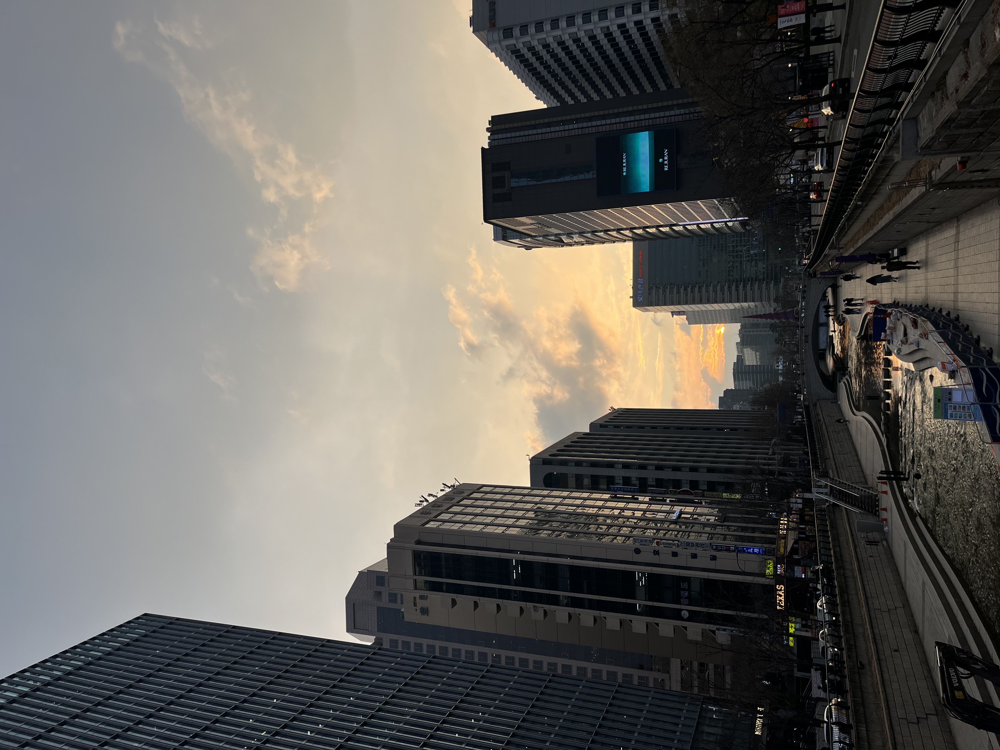
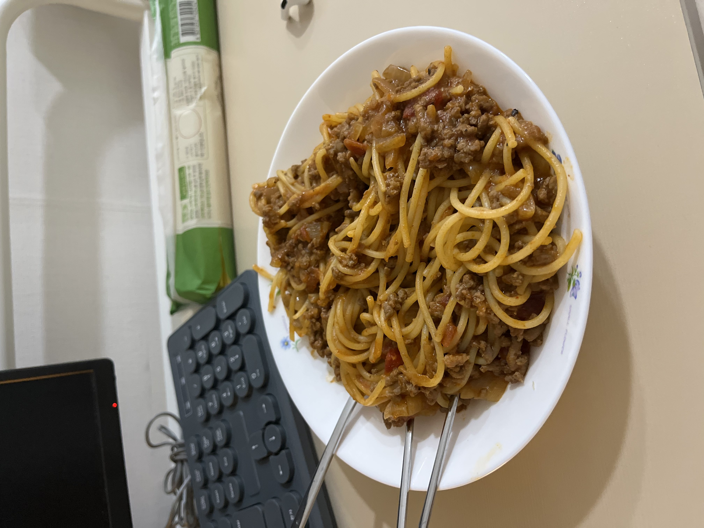

Life of university lab intern in Seoul
Thank you friends and family for clicking on another blog. By the time this blog’s been uploaded, I will have finished building the subscription feature. Learning how the backend works in web development was a little confusing at first but this website is definitely a fun small project I’ve been working on to learn some fundamental programming.
I’ll break down today’s blog into three parts : my daily routine, a more detailed outline of what I do for work, and my current prayer requests.
Part 1 : Day in the Life of Yongjin
Something I’ve been enjoying since leaving the army is having the freedom to choose when I wake up. At times, I want to sleep in and wake up at 9am or sometimes I want to get on that miracle morning routine and wake up at 6am. But on average, I’d say I wake up at around 7:30 am. That gives me enough time to QT for ~30 minutes, shower, cook breakfast and pack a lunch, and call some friends in America (mostly my girlfriend, jane) before I head out to work. There is some Scripture from my recent QTs that I want to share at the end of the blog so keep reading.
For breakfast, I usually do one of two things. I have a freezer filled with breakfast burritos that I make over the weekends. My current recipe is composed of ground beef, cheese, scrambled eggs, tomatoes, and lettuce. Pretty solid breakfast. On days I feel fancy, I usually cook up some eggs with bacon and like to have a greek yogurt on the side. The kitchen of the studio I’m living in is communal but it’s quite nice. The landlord provides basic seasonings and even unlimited rice and ramyeon!
some meal-prep burritos & my first chess.com brilliant move (THE ROOOOK)
After FaceTiming some folks, I try to leave the apartment by 10am. I live by Mokdong station, which is ~40 minutes from Yonsei University, where I work. By the time I get to the subway station, there are very few people in the subway cars so it’s a rather convenient commute. I’ve been trying to get some reading done during the commute but it’s honestly so easy to just watch some IG reels or play rapid chess
crossing yanghwa bridge otw to work
Sinchon has been absolutely beautiful these past few weeks. All the trees in front of the university are cherry blossoms and it truly feels like I’m walking through a K-drama scene with all the cherry blossom petals flying in the air.


I get to work around 11am and start organizing what I’ll do that day. Most of my job entails reading and studying research papers related to wireless networking (that’s what the lab studies) and assisting graduate students in writing their papers. I definitely have some time to spare towards the end of the work day so I’ve been teaching myself some basic data science tools like Matplotlib, Pandas, and Numpy.


By 6pm, I’m out of the lab and head to the gym. I’ve been going to a gym in front of the university. The gym is on the 7th floor of a building so the sunset views are quite beautiful. The gym is definitely more on the crowded side, especially because it’s the beginning of the semester here in Korea. But I always manage to get a good workout in. I try to hit each body part at least once a week and squeeze in time for some cardio as well.


did you know korean gyms give you gym clothes? very convenient
I aim to leave the gym around 7pm so I can get back home and have time to eat dinner. 7:40pm, I get home and heat up some Japanese curry that I make at the beginning of the week as well. I know it’s not a great habit, but I like to watch YouTube videos while I eat. Just eating alone and not listening to anything seems mad awkward.
Not curry, but one my works of art
By 9pm, I have supper in my belly and am all washed up. I play some games of chess and do some reading and close out the day around 10~11pm
Part 2 : Internship

"the truth will set you free" john 8:32
My current internship is a research intern position at Yonsei University. The lab is called WINET, short for wireless networking. The lab focuses on optimizing edge network systems. In a nutshell, it’s about using devices such as IoT, drones, and even our smartphones as ways to pass data efficiently without having to rely on central servers 🤓🤓🤓.
As mentioned in my previous blog, I initially searched for a lab internship after my mother suggested it to me. I definitely don’t yet have the technical skills for an internship at a tech company so we figured that working at a university would be a good start. I emailed a couple of professors in Seoul that researched topics anywhere from sustainable city development, to agriculture robotics, and IoT technologies. I honestly didn’t have much hopes and was pretty set on just going to a hagwon (prep academy) to learn some basic coding or fly out to Croatia with my parents where they will be living.

eating steak with my parents. i guess this could've been my life if i decided to move to croatia for the summer lol
Luckily, after only about 4~5 rejections, Dr. SuKyoung Lee replied to my email and asked me to come to Yonsei to have a coffee chat/interview. Here’s one thing I didn’t know, and would be helpful for anyone that’s looking for lab internships in Korea. In America (at least at Cornell), I’ve seen a lot of students in STEM, including some friends and my older sister, work as lab assistants for a semester or two just to get their foot in the door in their respective fields of interest. But in Korea, all interns are expected to continue their studies at the lab and become a masters or PhD student. As a result, Dr. Lee was surprised that I applied to only work for 5 months, while I was thinking that 5 months for an internship is a really long time.Anywho, since my technical skills aren’t the most refined in programming, we came to a consensus that I can help her graduate students write their research papers, since most publications for STEM research is done in English for American journals. By nature, my job doesn’t have many technical aspects, which is a little bit of a disappointment. It mostly entails reading hella research papers and writing hella research papers. Nevertheless, I’m truly grateful that I have a meaningful job to do during the last few months until school begins, and I look forward to learning the field of research in computer science.
Part 3 : My Faith
Life after the army is so silent. In the army, from the moment you wake up to the moment you go to sleep, you are always surrounded by peers. There was 0 individual time. While I am grateful that I now have all the alone time in the world since I live by myself now, it leaves me to sit with my thoughts a lot as well.
Sitting alone has given me the opportunity to think about and repent upon the sins that I’ve committed by hurting those around me and how my actions have been deteriorating my own spirit. Unfortunately, I let these reflections weigh down onto me as guilt and shame. I often find myself occupying my time with Reels or Shorts just so that I don’t have to sit with my own dreary thoughts. I simply do not want to deal with the enemy actively telling me that I should be full of shame for how I’ve sinned against God.
Recently, a verse that I’ve recently been praying on and even have written up on my wall is Ephesians 4:22-24.
“To put off your old self, which belongs to your former manner of life and is corrupt through deceitful desires, and to be renewed in the spirit of your minds, and to put o the new self, created after the likeness of God in true righteousness and holiness”
When it comes to dealing with shame, this verse helped me to realize that after you repent, the you that sinned in the past is no longer you, spiritually. You are renewed and God has given us that second chance, so don’t let the devil which had a hold on your hold self hold your present self, which seeks to serve God. It's all about believing that no scheme of the devil against us can defeat the love and forgiveness we receive from Jesus' death and resurrection on the cross.
Before I wrap up the blog, here’s my prayer request as of present (April 13th, 2025)
- To have wisdom to be able to sit silently and speak to God, and not let the devil taunt me
- To choose to do the will of God above all, and to fulfill the desires of the spirit, not my flesh
"For I do not do the good I want to do, but the evil I do not want to do—this I keep on doing. Now if I do what I do not want to do, it is no longer I who do it, but it is sin living in me that does it." (Romans 19-20)
Thank you for reading today. I will continue to brainstorm blog ideas and keep working to make this website
more functional and user-friendly. For the next update, I’m thinking about adding a comment section and in the
future, an OpenAI-based YJ chatbot.
Have a good Resurrection Day this Sunday, and God bless!